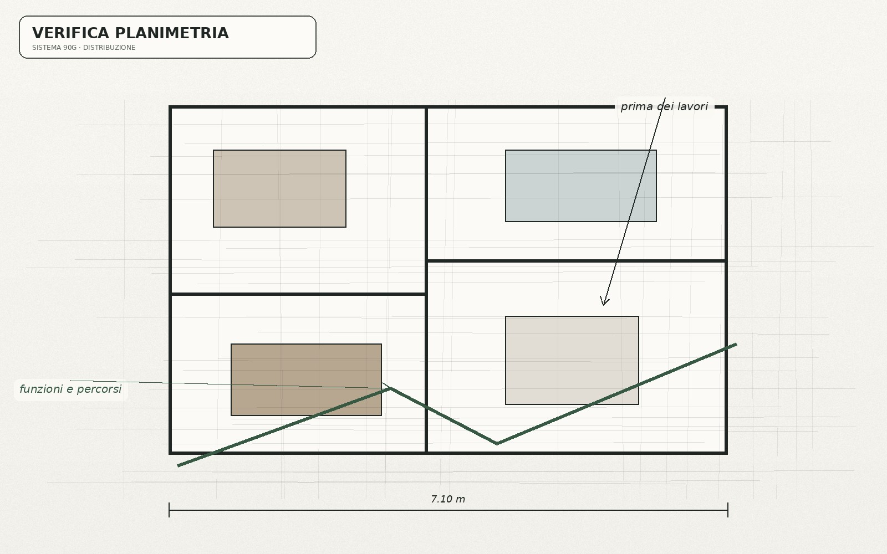

Informazioni di partenza
Quello che si conosce
Spazio, aperture, vincoli disponibili, abitudini, priorità, contenimento ed elettrodomestici desiderati.
Esempio illustrativo · Progetto Cucina 90G
Questo esempio non rappresenta un progetto reale e non promette un numero fisso di elaborati. Serve a mostrare come il risultato rende leggibili le decisioni principali prima del confronto con il rivenditore.

Scenario illustrativo
Immagina un ambiente con planimetria e misure disponibili, alcune aperture già definite, esigenze di contenimento, elettrodomestici desiderati e dubbi sulla disposizione. Il risultato non parte da un catalogo: organizza questi elementi in una direzione comprensibile.
Informazioni di partenza
Spazio, aperture, vincoli disponibili, abitudini, priorità, contenimento ed elettrodomestici desiderati.
Lettura progettuale
Funzioni, sequenze d'uso, passaggi, interferenze e rapporti tra le principali zone operative.
Risultato
Una direzione di progetto, le priorità da preservare e i punti che il rivenditore dovrà verificare e adattare.
La differenza pratica
Questo permette di valutare con più criterio una modifica proposta successivamente dal rivenditore: se cambia la composizione, puoi capire quale esigenza deve comunque restare soddisfatta.
Come si presenta il risultato
La disposizione proposta viene resa comprensibile attraverso gli elaborati e le visualizzazioni utili per quello specifico caso. Il loro scopo è far leggere la soluzione, non produrre una distinta esecutiva.
Le decisioni principali vengono collegate alle esigenze che le hanno generate: contenimento, sequenze di lavoro, passaggi, aperture, relazione tra persone ed elettrodomestici.
Ciò che dipende dal rilievo reale, dalla modularità del marchio, dai modelli scelti o dalle condizioni di installazione viene lasciato esplicitamente alla fase successiva con il rivenditore.
La parte utile del fascicolo non è “far copiare un disegno”. È conservare il ragionamento mentre la cucina viene trasformata in una fornitura reale.
Esempio di lettura
La richiesta viene trasformata in una verifica della continuità delle superfici operative e della loro relazione con lavello, cottura e zone di appoggio.
Non viene trattata come una forma da inserire a tutti i costi: si verifica se passaggi, aperture, sedute e uso quotidiano la rendono coerente con l'ambiente.
Il contenimento viene valutato insieme all'accessibilità e alla funzione: aumentare i mobili non è utile se peggiora il modo in cui la cucina si usa.
Cosa non devi aspettarti
Non certifica misure, impianti, fattibilità, codici prodotto, disponibilità o prezzo della cucina. Il punto vendita scelto esegue le verifiche necessarie e traduce la direzione progettuale nella propria fornitura.
Progetto Cucina Sistema 90G · 145 €
Consulta il perimetro completo del servizio oppure avvia direttamente la richiesta nel portale.